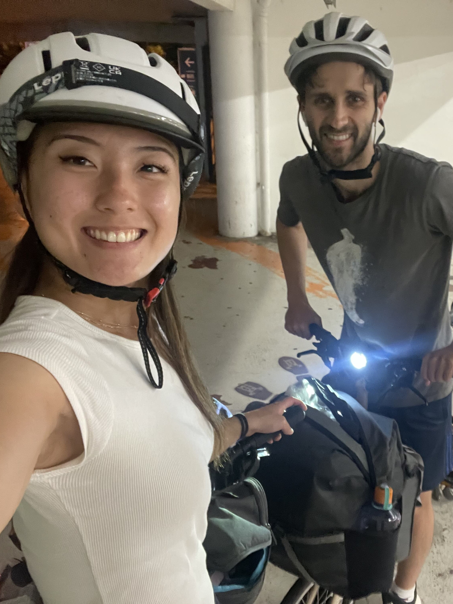
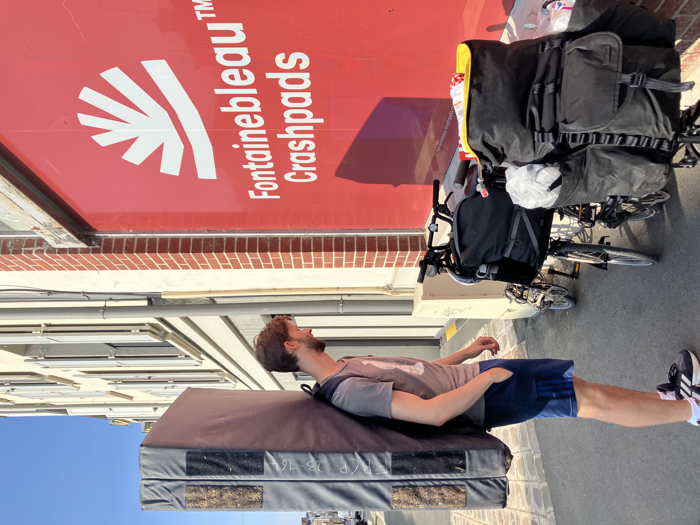
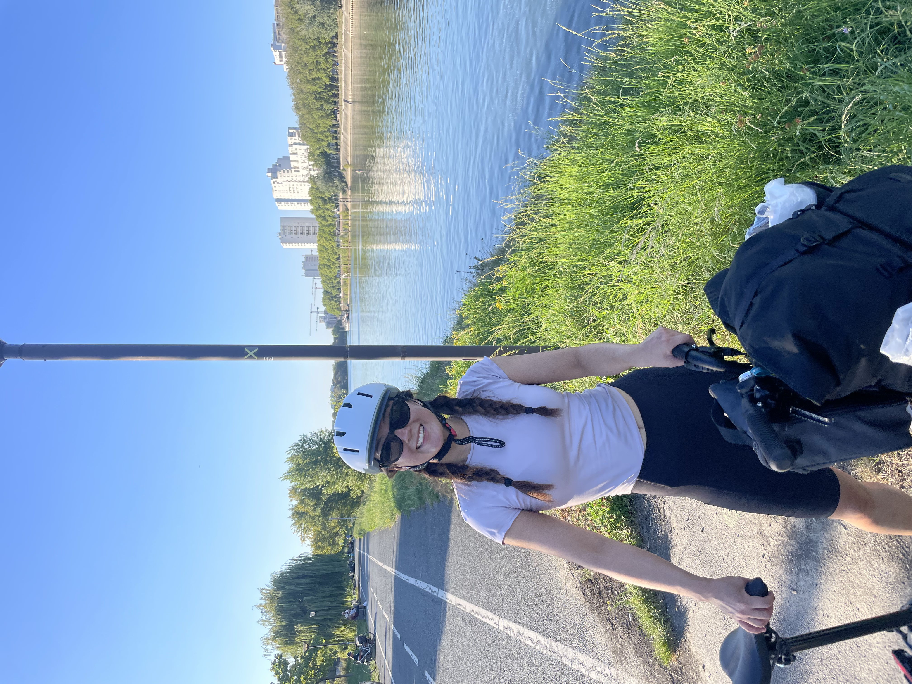

← Travel
Fontainbebleau 2025
We planned an intense weekend of climbing and cycling, our first of this magnitude! Did we make it back alive and well....

15th August 2025
We had packed all our gear into two small bags that fit on the front of our bromptons and set off toward Kings X to hop on the Eurostar train to Paris. It was just after 5:30pm when we left after a not so smooth process of packing and carrying our bromptons through security and border control. However, we were excited to arrive in Paris to start our journey south to Fontainebleau. Originally we had planned to cycle 5h down from Paris at 9pm at night although, thankfully, Sophie had adamantly told me there was no way she would be doing that. So we hopped on a regional train to arrive in Fontainebleau and hour and a half later. We planned to camp the first night at a bivouac on the outskirts of the forest and so we set off cycling towards the forest of Fontainebleau. The journey wasn’t as peaceful as we had hoped as we fumbled through pitch black parks, encountered oddly behaving people on the way and pushed our bikes through several hundred meters of deep sand. Eventually though we reached the bivouac at 11pm and set up camp much to the chagrin we think of the other 10 or so groups already settled in for the night.

16th August 2025
We got up slowly, fully packing up at 8am and only leaving camp around 8:30am to make our way to breakfast at a cafe and stopping for supplies at a monoprix. Sophie briefly got trapped in an automated public toilet before we picked up our bouldering crash pad at 10am. Cycling with that crash pad was an ordeal in itself, from behind it looked like a massive black rectangle was navigating the roads of Fontainebleau on its own. We had little idea of where we were going in the forest of Fontainebleau, just that we needed to reach Mt Aigu. We followed some trails which rooms us through more sand and up steep hills covered in roots which is a challenge even without bikes with 10kg+ on the front. Looking back, I’m sure hiking is the preferred method to get around Font if you are climbing… We found some good spots to set up our gear and start climbing. We started with the yellow circuit climbs and found them to be on the easier side and so we quickly moved on to orange climbs. We covered about 5 different climbs which challenged us but in the end we mastered them all. The most notable was one situated in a crevice between two rocks requiring strength to hold yourself on a small crimp with one average foothold before a final move to the top. The other was a tall slab with no hand holds and needed an insane level of trust on the grip of your feet. In between the climbing we rested, reading our books and napping, taking in the surroundings in the shade of a beautifully warm but windy day. The rock formations in the forest were the most impressive I had ever seen, the size of the boulders and their unique positions gave the impression of a giant playground. Exhausted, we returned into town for dinner and set up camp at a more reasonable hour at the same bivouac to get some rest for a busy next day.

17th August 2025
The morning was eerily similar to the previous morning although we headed off in a different direction towards Mt Ussy. Cycling in Fontainebleau was one of the best experiences because the people are always conscious and considerate of cyclists. We had groups of riders passing by making friendly remarks to us. Our route to the climbing area was much easier and within minutes of returning to the forest we stopped off at a collection of boulders perched on top and around each other. Like yesterday we started off on the orange circuit although eyed some climbs from the blue circuit. We ended up going through 5 climbs again, all orange except for a blue climb which we tried over over again until we perfected it. The difficulty of these climbs came at the top where an outward bulge obstructed our view of our feet and required a final push over the hump when we had already used up our energy getting to that point. We also revisited a few slabs and were again astounded by how difficult they were. I read somewhere that, because many decades ago the style of climbing relied less on power and more on friction, the grades for slab climbs feel many times more difficult and that felt true in these cases. We also found it a challenge to read the route, often we missed out on a hold which put you in a better position for the next move. At 11:30am we needed to return the crash pad and make our way back towards Paris. I mostly felt excited but a little nervousness creeped in at the 70km cycle we were about to do. We started off cycling through the forest with sand and gravel slowing our progress heavily. Half walking our bikes we made it through in about an hour and started cycling through small towns on the outskirts of Paris. This was my favourite part as the streets were quiet but had charm and lots of green space. At one point we met with the Seine and about halfway through our journey we decided we needed some food to pick us up for the second half. Afterwards we continued Alaina the Seine, passing by smaller towns As we got close to Paris, more industrial buildings appeared and crowds started to form. At one point we passed a large gathering of cars, music and food near the Seine which we slowly weaved through. After 5.5h of cycling we had made it into Paris where the cycling infrastructure was actually quite good. By the time we reached our apartment for the night next to Gare du Nord we were exhausted and keen for a shower, food and a good nights sleep. Unfortunately the apartment had other plans as we again had cold showers in Paris and the bedding wasn’t particularly clean… It didn’t matter to us as we were so tired we fell straight asleep for our early Eurostar train back into London in the morning.